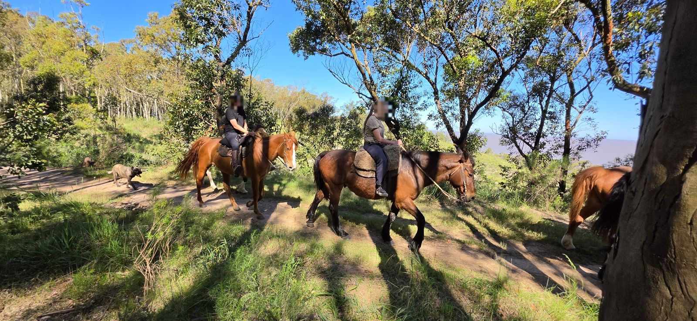
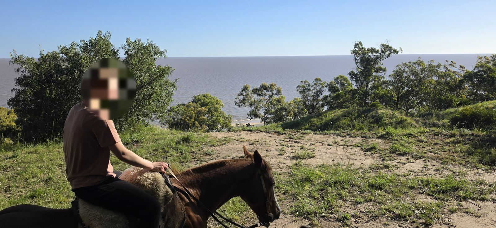
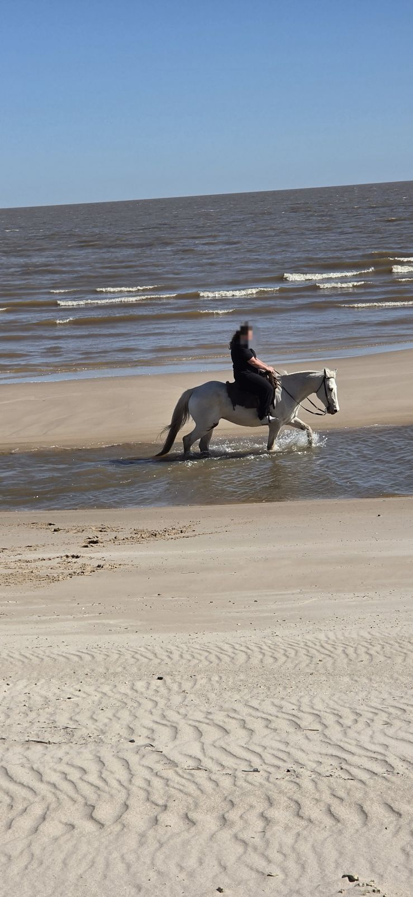
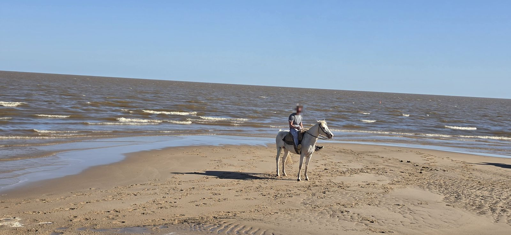
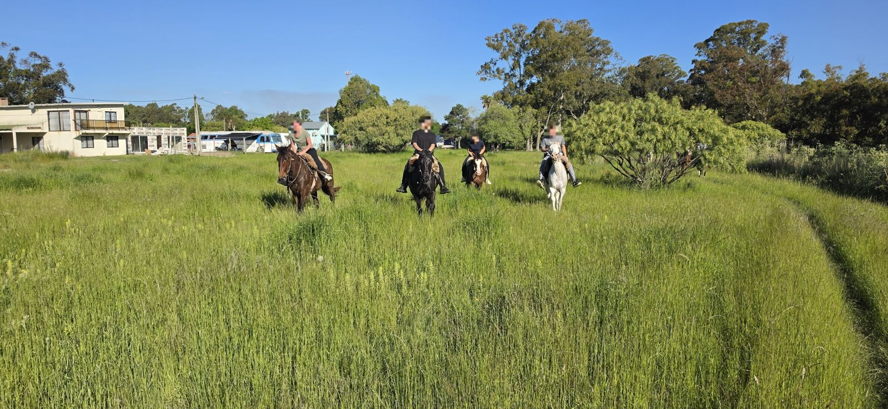
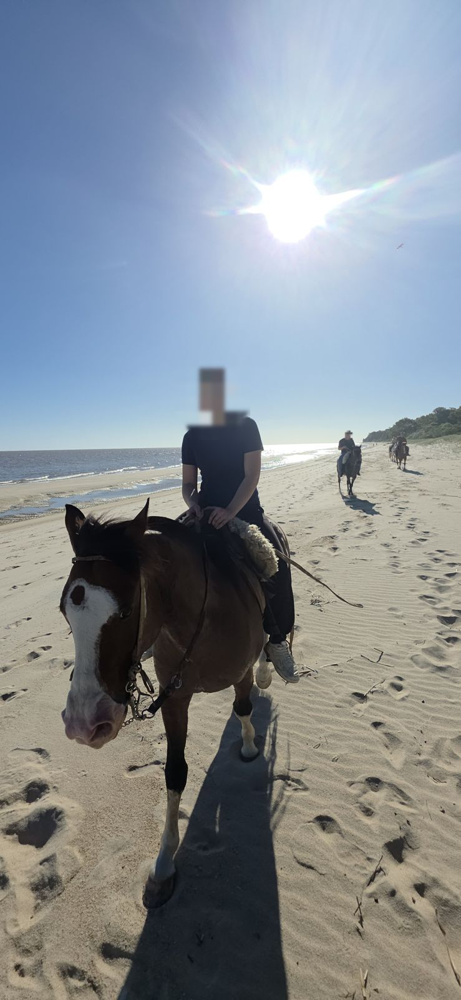
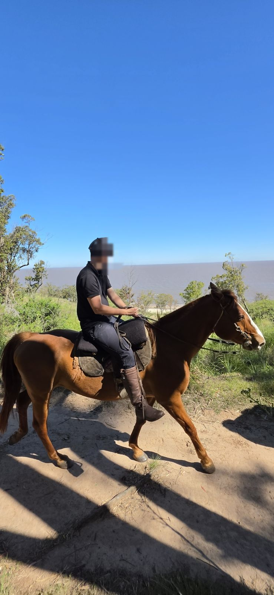
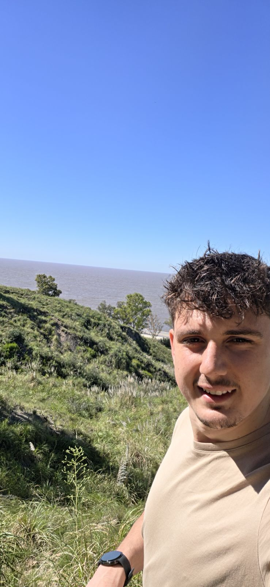

San José · Uruguay · Río de la Plata
Zwei Stunden zu Pferd: oben an den roten Lehmklippen entlang, dann hinunter an den Strand – im Schritt, Trab und Galopp. Mit eigenem Guide, der deine Sprache spricht.
Die Route führt über das offene Land oberhalb der Barrancas, dann über einen Pfad hinunter an den langen Sandstrand von Kiyú.
Kurze Einweisung: aufsteigen, lenken, anhalten. Wir stellen dir ein Pferd passend zu deiner Erfahrung.
Ruhiger Ritt an der Kante der roten Lehmklippen, mit weitem Blick über den Río de la Plata.
Über einen Pfad geht es von den Barrancas hinab zum Sand.
Schritt und Trab am Wasser – und wer sicher im Sattel sitzt, galoppiert am Strand entlang.
Zurück zum Ausgangspunkt. Der Guide macht unterwegs Fotos und Videos von dir.








Ich komme aus Deutschland und lebe hier in Kiyú. Die Wege an den Klippen und am Strand reite ich seit Jahren.
Ich begleite dich auf Deutsch, Englisch oder Spanisch, erkläre dir das Pferd und passe das Tempo an dich an. Unterwegs mache ich Fotos und Videos, damit du nur genießen musst.
Ausritt mit Stan buchenSchick uns deine Anfrage. Wir bestätigen per WhatsApp innerhalb von 24 Stunden.
Mit Wohnsitz in Uruguay: 1.700 UYU pro Person.
Ja. Anfänger reiten im Schritt, und der Guide bleibt in deiner Nähe. Den Galopp machen nur geübte Reiter.
Lange Hose, geschlossene Schuhe mit flacher Sohle, Sonnenschutz und Wasser. Keine Flip-Flops.
Bei Regen oder starkem Wind verschieben wir den Termin oder erstatten dir den vollen Betrag.
30 % Anzahlung per Überweisung oder Mercado Pago, den Rest vor Ort in USD oder Pesos.
In Kiyú, Departamento San José. Den genauen Treffpunkt mit Google-Maps-Link bekommst du nach der Buchung.
Auf Anfrage. Schreib uns das Alter und die Erfahrung, dann finden wir eine Lösung.